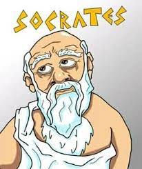

Cidade: Atenas
Telefone: (00)0123456789
E-mail: socratesateniense@filosofo.com
Instagram:@socrates
CONSTRUTOR DE PENSAMENTOS E ATITUDES DE BASES FILOSÓFICAS
Universidade do Mundo Ocidental Clássico
FORMADOR DE PENSAMENTOS ACADÊMICOS UNIVERSAIS Universidade do Mundo Ocidental Clássico
Produzir pensamento filósofico de base ocidental.
PENSADOR FILOSÓFICO PLENOEstimular o surgimento do pensamento filosófico pleno.
Sócrates (469 a.C. - 399 a.C.) foi um dos grandes filósofos do mundo Ocidental.
Nascido em Atenas, na Grécia, é considerado o pai da filosofia, pois revolucionou o pensamento grego,
influenciando os que vieram depois.
Mesmo sem ter deixado nenhum texto escrito, conseguiu fazer com que seus ensinamentos ganhassem o mundo,
difundidos em grande parte por seu discípulo Platão.
Assim, muitas frases filosóficas são atribuídas ao pensador, que tinha enorme curiosidade pela vida e
instigava os jovens a pensar sobre ética, política, amor, educação, propósito, justiça e tantas outras áreas
importantes da existência humana.
1. "Só sei que nada sei".
Essa é uma das frases mais famosas de Sócrates. O filósofo, ao reconhecer que não tem conhecimento sobre a
vida, abre um caminho para buscar respostas.
É a partir dessa máxima que surge o Método Socrático, no qual o pensador instiga as pessoas a se darem conta
de sua própria ignorância, e a partir de então ir ao encontro da sabedoria.
2. "Conhece-te a ti mesmo e conhecerás o universo e os deuses".
Com essa frase, Sócrates deixa clara a ideia de que, para conhecer além, é necessário fazer um mergulho
interior em busca de respostas sobre nós mesmos.
Cada ser humano já é por si só um universo vasto e é preciso se investigar para começar a buscar a
compreensão também sobre o que está fora do nosso controle.
3. "A vida irrefletida não vale a pena ser vivida".
Segundo consta, essa frase foi dita pelo pensador durante o julgamento que o condenou à morte.
Por ser muito contestador e instigar questionamentos de difícil resposta, Sócrates foi visto como um homem
aproveitador e que colocava em dúvida a crença na religião vigente na Grécia, baseada na figura dos deuses.
Assim, foi decidido em tribunal que, se ele quisesse viver, teria que encerrar sua participação em debates
públicos e deixar de influenciar os jovens.
O filósofo então se recusou, pois para ele não fazia sentido uma vida em que não pudesse refletir sobre a
existência e conversar com a juventude sobre todas essas questões, instigando-os a pensar por si próprios.
4. "Já é hora de irmos. Eu para a morte, vocês para a vida. Quem de nós segue o melhor rumo? Isso é segredo.
Exceto para Deus".
Essa é outra frase que o mestre teria dito poucos antes de ser executado.
Sócrates teria deixado essa mensagem e último questionamento para seus discípulos como uma forma de
despedida e também de, mais uma vez, reiterar sua ignorância perante os grandes mistérios do mundo.
5. "Ninguém faz o mal voluntariamente".
Sócrates acreditava que as pessoas não buscam fazer o mal. Ele entendia que para construir uma trajetória
com virtudes, as pessoas deveriam tentar fazer o que é certo, e que não necessariamente o certo seria o que
é moralmente ético.
Para isso, era preciso analisar cada situação com consciência.
Se ainda está curioso ou curiosa para saber mais sobre esse grande filósofo, leia a biografia de Sócrates.
Os filósofos pré-socráticos fazem parte do primeiro período da filosofia grega. Eles desenvolveram suas teorias do século VII ao V a.C., e recebem esse nome pois são os filósofos que antecederam Sócrates. Esses pensadores buscavam nos elementos natureza as respostas sobre a origem do ser e do mundo. Focando principalmente nos aspectos da natureza, eram chamados de “filósofos da physis” ou "filósofos da natureza". Foram eles os responsáveis pela transição da consciência mítica para a consciência filosófica. Assim, buscaram uma explicação racional para a origem de todas as coisas.
SAIBA MAIS